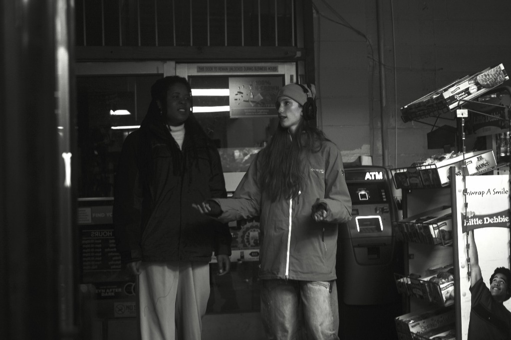

ABOUT ANYA...

Photo Credit: Eli Gramenz
Anya Lovely Gorder is an award-winning, Los Angeles-based writer-director and a recent graduate of the Film & Media Arts program at the University of Utah.
Having grown up in a small town in Connecticut, the influence of that rural-gothic childhood remains ever-present in her visual storytelling. Anya is a creative chameleon with a widely varied portfolio spanning noir, horror, dance, and fashion films. While her deepest passions lie in the realm of horror and psychological cinema, she thrives on tackling diverse subject matter and is always ready for the next creative challenge.
Beyond the director's chair, Anya is a deeply hands-on filmmaker who adores the collaborative energy of production. With extensive physical on-set experience, she has worn nearly every hat in the pipeline; working as a 2nd AD, script supervisor, gaffer, and sound recordist. Simply put, she loves the craft of filmmaking and is equally at home tackling freelance narrative projects, collaborating on indie sets, or bringing her versatile skill set to an in-house production team.